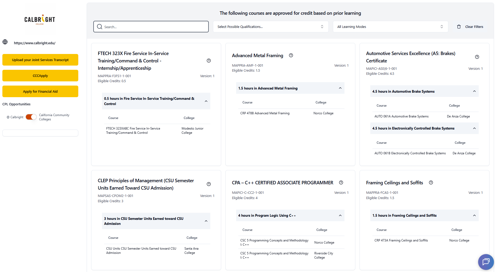
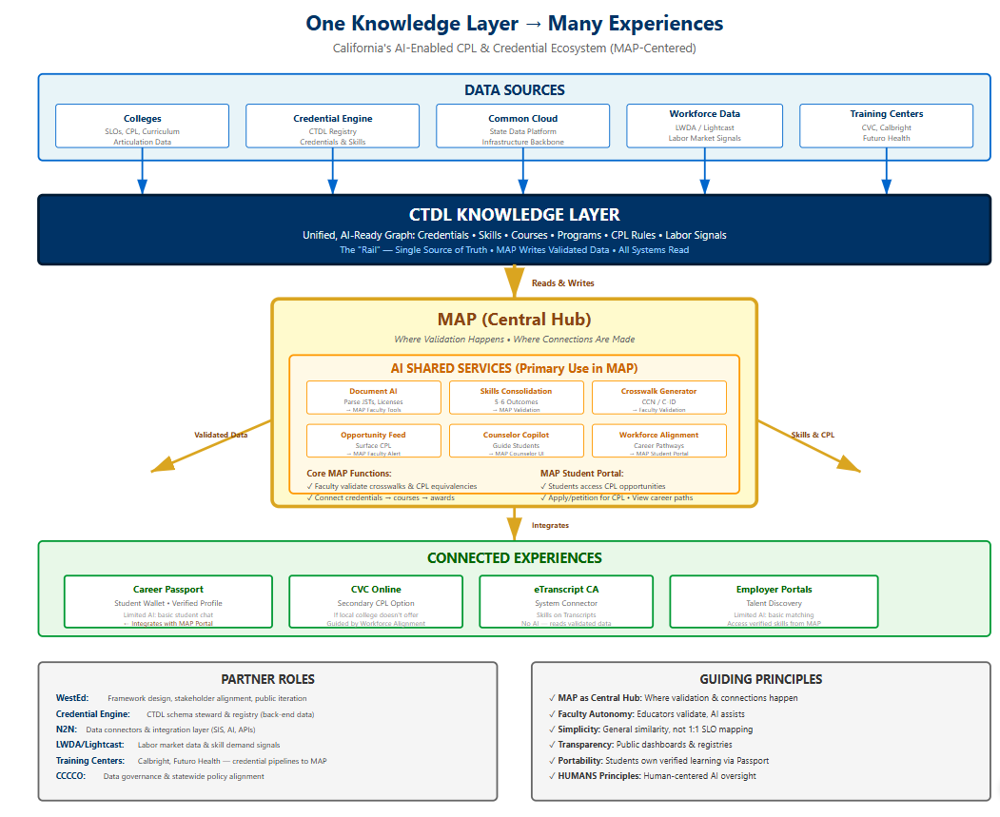

Contents
Executive summary
Credit for Prior Learning (CPL) is how California is choosing to recognize the learning its people already carry. An estimated 6.8 million Californians have completed some college — or none — yet hold real, demonstrable skills from work, military service, apprenticeships, and professional training. CPL translates that experience into college credit, shortening the path to a credential and lowering its cost.
For most of its history, CPL was a quiet, petition-based process: a student had to know it existed, know to ask, and navigate it largely on their own. California's community colleges are flipping that model — from a benefit a student had to discover into an invitation the system extends. Through the MAP platform, colleges publish their CPL opportunities openly and reach out to working adults, veterans, and apprentices to claim the credit they have already earned, instead of re-taking what they already know.
This work advances the goals of Vision 2030 and the 2025 California Master Plan for Career Education — widening access, accelerating completion, and connecting learning to careers — and it is built to last. The MAP team embeds AI assistance from the outset under the Chancellor's Office's HUMANS principles (human agency and accountability, transparency, privacy, bias mitigation, inclusive design, and careful evaluation of partners), so technology accelerates the work while faculty judgment stays at its center.
CPL's deeper value is in what it convenes. It brings discipline faculty, industry and employers, and state agencies to the same table — faculty validate the learning, industry names the skills that matter, and agencies align the pathways — turning the recognition of prior learning into a shared, durable practice rather than a one-time exception. The result is a more open door for Californians, and a clearer route from what they already know to where they want to go.
What is Credit for Prior Learning, and why does it matter to students?
Credit for Prior Learning (CPL) is college credit awarded for validated skills and knowledge gained outside of formal coursework. It recognizes what working adults, apprentices, and veterans already know from jobs, military service, and professional training — and translates their expertise into real college credit.
When appropriately assessed, this learning may be translated into academic credit, helping students reduce time to completion, lower educational costs, and make more efficient progress toward their goals. CPL also advances the objectives of Vision 2030, which calls on the California Community Colleges to expand access, accelerate student success, and address long-standing equity gaps.
CPL Types — recognized under California Title 5 §55050
- Credit by examination (including high school articulation)
- Joint Services Transcripts (military training and service)
- Student-created portfolios documenting skills and experience
- Industry certifications and professional licenses
- Standardized assessments (AP, CLEP, IB exams)
CPL Modes of Learning
Learning eligible for CPL can be acquired in many settings, including but not limited to:
- Self-study; workplace, industry, apprenticeship, internship & work-experience training
- Military training; state and federal training
- Noncredit, not-for-credit (contract education), adult education, ROPs, community education
- Incarcerated training; high-school articulated coursework
- Non-accredited & state-authorized agency learning
- International higher-education learning & transcript evaluation
Basic steps to create CPL-powered pathways
- Create CPL opportunities at your college
- Develop procedures and capacity to offer CPL up front
- Integrate CPL in MAP planning tools — making CPL visible to the public and empowering students
- Process CPL requests: document, counsel, transcribe
- Partner with employers and industry to optimize and create pathways to career
Equitable access and completion without debt
CPL disproportionately benefits working adults, veterans, Pell-eligible, and historically underserved communities who have acquired real skills but lack formal credentials.
The CPL Bump
National research on Prior Learning Assessment — the CAEL & WICHE PLA Boost study, a 72-institution analysis of adult-student outcomes — shows that earning credit for prior learning measurably lifts completion, with the largest gains for historically underserved learners:
Source: CAEL & WICHE, The PLA Boost: Results from a 72-Institution Targeted Study of Prior Learning Assessment and Adult Student Outcomes (revised Dec 2020).
For veterans & working learners
- Only 1 in 4 veterans believe they received the college credit they deserve for military training
- 25% of surveyed veterans report running out of military benefits before completing a credential — CPL can bridge this gap, enabling veterans to reach up to a master's degree at no additional cost
- $14,653–$26,115 in educational benefits preserved per student (≈15 units of CPL), with up to 36 months of Post-9/11 GI Bill eligibility stretched further toward higher degrees
- CPL reduces loan burden, preserves GI Bill and Pell benefits, and accelerates time to degree for working learners
Key performance indicators
Systemwide KPIs from the MAP CPL Dashboard, as shown on COBI. The six headline metrics update live; the exhibit & recommendation counts are a current snapshot from the MAP Custom Reporting Module. See the live dashboard for college-level detail.
Statewide CPL credit recommendations
The CCC Collaborative "statewide exhibits" are credential standards built by statewide discipline-faculty workgroups (ASCCC Pathways to Credit) and published in MAP for every college to adopt. 132 exhibits across 12 program areas carry 1,101 distinct credit recommendations, adopted 1,298 times by 62 colleges to date. Browse them at map.rccd.edu/statewidecpl.
Click a program area to see its statewide exhibits. Could adopt = colleges that already teach an aligned local course and could still articulate the recommendation — the untapped-adoption opportunity.
Construction Technology 46 122 122 0
- Acoustical Installer Apprenticeship
- Building Plans Examiner
- C-10 Electrical Contractor
- C-29 Masonry Contractor
- C-36 Plumbing Contractor
- C-46 Solar Contractor
- C-47 General Manufactured Housing Contractor
- C-5 Framing and Rough Carpentry Contractor
- C-6 Cabinet, Millwork and Finish Carpentry Contractor
- C-8 Concrete Contractor
- Cabinetmaker Apprenticeship
- California Building Code Certification
- California Residential Code Certification
- Carpentry Apprenticeship
- Class A Contractor License
- Class B Contractor License
- Class B-2 Contractor License
- Commercial Building Inspector
- Commercial Electrical Apprenticeship
- Construction Craft Laborer Apprenticeship
- Drywall Applicator Apprenticeship
- Hardwood Floor Layer Apprenticeship
- Insulator Apprenticeship
- Millwright Apprenticeship
- Modular Installer Apprenticeship
- NCCER CORE Curriculum - Introduction to Basic Construction Skills
- NCCER Commercial Carpenter Journey Level
- NCCER Commercial Electrician Level 1
- NCCER Commercial Electrician Level 2
- NCCER Commercial Electrician Level 3
- NCCER Commercial Electrician Level 4/Journey Level
- NCCER Construction Foreman Management
- NCCER Construction Superintendent Management
- NCCER Industrial Carpenter Journey Level
- NCCER Industrial Electrician Level 1
- NCCER Industrial Electrician Level 2
- NCCER Industrial Electrician Level 3
- NCCER Industrial Electrician Level 4/Journey Level
- OSHA 10 and 1 yr Experience
- OSHA 30 and 6 months Experience
- Pile Driver Apprenticeship
- Residential Building Inspector
- Residential Electrical Apprenticeship
- Residential Plans Examiner
- Scaffold Erector Apprenticeship
- Shingler Apprenticeship
Welding 23 183 228 27
- ASME BPVC Section IX — FCAW Welder Qualification
- ASME BPVC Section IX — GMAW Welder Qualification
- ASME BPVC Section IX — GTAW Welder Qualification
- ASME BPVC Section IX — SMAW Welder Qualification
- AWS D1.1 FCAW Qualified Welder
- AWS D1.1 SMAW Qualified Welder
- AWS D1.3 GMAW Qualified Welder
- AWS D1.5 SMAW Qualified Welder
- AWS D1.8 FCAW Qualified Welder
- AWS D17.1 GTAW Qualified Welder
- AWS D9.1 GMAW Qualified Welder
- Advanced Gas Tungsten Arc Welding (GTAW)
- Gas Metal Arc Welding (GMAW)
- Introduction to Gas Tungsten Arc Welding (GTAW)
- LA City Certified Welder — AWS D1.1 FCAW
- LA City Certified Welder — AWS D1.1 FCAW-S
- LA City Certified Welder — AWS D1.1 SMAW
- LA City Certified Welder — AWS D1.8 FCAW-S
- NCCER Welding Level 1
- NCCER Welding Level 2
- NCCER Welding Level 3
- NCCER Welding Level 4
- Shielded Metal Arc Welding (SMAW)
Fire Technology 16 260 342 45
- California State Fire Officer Certification
- Fire Apparatus Driver/Operator 1A
- Fire Inspector 1A
- Fire Inspector 1B
- Fire Inspector 1C
- Fire Inspector 1D
- Fire Inspector I
- Fire Officer Journeyperson Certificate
- Fire Officer — Company Officer 2A
- Fire Officer — Company Officer 2A–2E (Full Series)
- Fire Officer — Company Officer 2B
- Fire Officer — Company Officer 2C
- Fire Officer — Company Officer 2D
- Fire Officer — Company Officer 2E
- Firefighter 1
- SFT Fire Inspector 1C
Computer Information Systems 15 101 105 74
- AWS Certified Cloud Practitioner
- AWS Certified SysOps Administrator — Associate
- Cisco Certified CyberOps Associate
- Cisco Certified Network Associate (CCNA)
- CompTIA A+
- CompTIA Cloud+
- CompTIA CySA+
- CompTIA Linux+
- CompTIA Network+
- CompTIA PenTest+
- CompTIA Project+
- CompTIA Security+
- CompTIA Server+
- CompTIA Tech+
- Microsoft Certified: Azure Administrator Associate (AZ-104)
Automotive Technology 11 149 149 63
- ASE A1 — Engine Repair
- ASE A2 — Automatic Transmission/Transaxle
- ASE A3 — Manual Drive Train and Axles
- ASE A4 — Suspension and Steering
- ASE A5 — Brakes
- ASE A6 — Electrical/Electronic Systems
- ASE A7 — Heating and Air Conditioning
- ASE A8 — Engine Performance
- ASE C1 or G1 — Service Consultant or Auto Maintenance and Light Repair
- ASE G1 — Auto Maintenance and Light Repair
- ASE L1 — Advanced Engine Performance Specialist
Fire Technology - Wildland 6 9 10 0
- NWCG Wildland Fire Certifications (S-110 / IS-700 / IS-800 / P-101 / FI-110 / ICS-300 bundle)
- NWCG Wildland Fire Certifications (S-130 / S-219 / S-230 / S-231 / S-270 bundle)
- NWCG Wildland Fire Certifications (S-130/S-230/S-231/S-270)
- NWCG Wildland Fire Certifications (S-190 / S-290 / ICS-100 / ICS-700 bundle)
- Wildland Fire Certifications (C-190, C-290, ICS-100, ICS-700)
- Wildland Fire ICS/NWCG Certification Bundle
Emergency Medical Services 5 65 66 59
- EMT Certification
- Fire Fighter Paramedic Journeyperson Certificate
- Firefighter EMT Certificate
- Paramedic Journeyperson Certificate
- Paramedic License
Corrections 2 30 46 2
- Correctional Officer Core Course (CDCR/CPOST)
- Standards and Training for Corrections (STC) / Board of Parole Hearings
Real Estate 2 24 38 27
- California Real Estate Broker License
- California Real Estate Salesperson License
World Languages 2 13 36 34
- Defense Language Proficiency Test (DLPT) — Russian
- Defense Language Proficiency Test (DLPT) — Spanish
Administration of Justice 1 114 117 55
- POST Basic Academy
Kinesiology/Health 1 23 31 56
- Basic Military Training
Other Statewide 2 8 8 12
- California State Bar Membership
- HRCM 001
HVAC is in progress — faculty currently meeting. Exhibit / recommendation / adoption counts and the could-adopt figures are a current snapshot from the MAP Custom Reporting Module (auto-refreshed daily); the exhibit lists are the published statewide standards. Could-adopt counts colleges distinctly within each program area (a college may appear in several).
Additional Vision 2030 CPL workplan metrics
Vision 2030 goals: scale and projected impact
How many Californians could benefit by 2030?
Potential economic impact
From Expected Economic Benefits of Credit for Prior Learning in California (Beacon Economics, June 2024).
Funding history & current allocations
2017–2022 · Design — building MAP and a scalable CPL strategy
Initial investment at Norco College soon expanded to all Riverside Community College District (RCCD) colleges (RCC, NC, MVC), nine additional Inland Empire / Desert Regional Consortium colleges, and Saddleback College — a total of $807K in seed funding to scale and beta-test the platform.
- Phase 1 — Seed funding & beta testing ($807K): $79K (Cervantes / CA Latino Legislative Caucus 1) + $788,225 across four consecutive IEDRC projects
- Phase 2 — Rapid expansion beyond 76 colleges ($7M): $2M (Caucus 2, 2021–23) · $2M (Caucus 3, 2022–24) · $3M (Calvert FIPSE grant, 2023–25)
- Phase 3 — Vision 2030 CPL Demonstration Project ($3.5M): Chancellor's Office IEPI funds (2024–25) to scale MAP and align CPL strategies with statewide Vision 2030 goals
2024–2030 · Statewide scaling & sustainability
Current and proposed funding supports scaling, MAP development, ongoing operations, AI-assist platform development, student support, research, partnerships, sprints, and local implementation at 119 credit and noncredit campuses as well as eligible non-college agencies and training providers.
- Phase 4 — Implement statewide infrastructure ($26M, 2024–2026): P98 one-time $6M (AI-assist, ASCCC/RP/WestEd contracts, operations) · P98 ongoing $5M · P98 one-time $15M (scaling CCC CPL infrastructure + local implementation)
- Phase 5 — Ongoing & proposed future funding ($70M, 2026–2030): Governor one-time $35M (outcomes-based local implementation) · Governor ongoing $2M/yr ($10M through 2030) · Approved ongoing $5M/yr ($25M through 2030)
CPL infrastructure & initiative funding sources
| Funding source | 2025-26 Budget | 2026-27 | 2027-28 | 2028-29 | 2029-30 | Total |
|---|---|---|---|---|---|---|
| Scale MAP CPL statewide — one-time $6M Prop 98 (CO Admin) | 6,000,000 | — | — | — | — | 6,000,000 |
| CPL Operations — ongoing $5M Prop 98 | 5,000,000 | 5,000,000 | 5,000,000 | 5,000,000 | 5,000,000 | 25,000,000 |
| CPL Infrastructure & Scaling — one-time $15M Prop 98 (2025–2028) | 2,179,615 | 5,954,764 | 2,100,000 | 2,665,621 | 2,100,000 | 15,000,000 |
| CPL Operations — ongoing $2M Prop 98 (Gov. proposed) | — | 2,000,000 | 2,000,000 | 2,000,000 | 2,000,000 | 8,000,000 |
| CPL Local Implementation Support — one-time $35M Prop 98 (2026–2028, Gov. proposed) | — | 15,000,000 | 15,000,000 | 5,000,000 | — | 35,000,000 |
| Total | 13,179,615 | 27,954,764 | 24,100,000 | 14,665,621 | 9,100,000 | 89,000,000 |
The CPL Initiative and MAP: California's CPL infrastructure
The Mapping Articulated Pathways (MAP) team drives the CPL Initiative of the California Community Colleges Chancellor's Office. Originally launched in 2017 as the Military Articulation Platform, MAP expanded in 2020 to support all forms of CPL and was integrated into the Chancellor's Office in 2024. The MAP team is administratively housed in the Riverside Community College District and works on behalf of the CPL Initiative, led by the Division of Academic Affairs and guided by the Senior Advisor to the Chancellor for CPL.
CPL infrastructure core commitments
- Maintain MAP CPL infrastructure at no cost to colleges, students, and related agencies
- Maintain CPL transparency — supporting colleges to adopt each other's articulations and equitably access CPL opportunities
- Ensure interoperability and integration of CPL on student-facing and academic-planning systems
- Break down silos and regulatory barriers that hinder interoperability and access
- Ensure continued scalability of CPL infrastructure, statewide and nationally
- Involve industry and employment partners in skills/credential cataloging and validation
- Empower Californians to document, request, and obtain all CPL based on their prior learning
- Maintain academic rigor by partnering with statewide and local faculty leadership
- Employ HUMANS principles in all AI-assisted technology integrations
- Minimize demands on local IT by integrating existing data sources (COCI, PPM, CVC, ASSIST.org)
The MAP team's three-part strategy
Culture
Professional development, multi-college faculty collaborations, and engagement with the Academic Senate (ASCCC).
Technology
A cloud-based platform for CPL creation, faculty approval, student planning, and college-branded CPL websites — no IT setup required.
Policy
Statewide CPL workgroup convening, law & regulation reform, intersegmental alignment with CSU/UC, and interagency data partnerships.
How colleges get started (three steps)
- Organize: add CPL to agendas, establish a CPL Strike Team, review AP 4235 and the CPL Implementation Guide, and screen incoming students for CPL opportunities
- Collect: gather sample CPL documents (working adults, apprentices, military, AP/IB/CLEP, high-school articulations, noncredit credit-by-exam, portfolios, TES articulations) and work with the MAP team to upload existing and new opportunities
- Practice & implement: meet with the MAP team at regional trainings or office hours to begin processing CPL (no-cost support for all colleges and noncredit/not-for-credit programs) and configure the college CPL Landing Page
Key initiatives driving CPL expansion
A core strategy is to respond to local, regional, and statewide priorities through short-term sprints and projects.
2025–2026 Veteran Sprint
The CCC Chancellor has set an ambitious goal to ensure all 34,000+ veterans studying in the system have their Joint Services Transcript (JST) processed in MAP for college credit — helping colleges comply with Title 5 §55050 and enhancing equitable access and completion for veteran students.
- Phase 1 (2025–2026) — systemwide course credit for Basic Training (stretch goal: 4–6 credits for all enrolled veterans). Example: rather than waiving CSU GE Area E from a DD-214, award local course credit from JST recommendations — e.g. 1 unit KIN 001, 1 unit KIN 002, 3 units HES 100.
- Phase 2 — articulate JST credit recommendations per veteran using AI to produce preliminary recommendations, reviewed by statewide Academic Senate faculty, then provided to colleges for awarding and transcribing.
- Phase 3 (2026–2028) — a demonstration project between Twentynine Palms and Copper Mountain College: upload JSTs for all enrolled military students, award Basic Training CPL, and develop faculty-reviewed pathways for the 42 Military Occupational Specialties trained at MCAGCC — a scalable model targeted for replication across all 34 California military bases by March 2027.
Veteran Sprint — current outcomes (live)
2025–2026 Apprenticeship Sprint
Designed to expand opportunities for Journey Workers and apprentices by awarding college credit for extensive on-the-job training and experience — increasing degree attainment, accelerating career mobility, and strengthening the skilled workforce. Three objectives:
- Develop CPL pathways to associate degrees by evaluating and awarding credit for Journey Worker experience, with regional outreach and industry collaboration
- Support colleges in establishing credit courses and programs that stack into certificates and degrees within apprenticeship pathways
- Enhance the MAP platform with AI-assist tools for apprenticeship CPL, degree-progress reporting, and outreach — and add apprentices alongside veterans and working learners on the MAP CPL Dashboard
Noncredit and Non-College CPL Landing Pages project
To expand the visibility of CPL opportunities to learners at noncredit, not-for-credit, adult-education programs, ROPs, high schools, and training agencies, MAP has developed CPL Landing Pages for non-college entities. Where college landing pages display a college's articulated non-college credentials, non-college landing pages show current students where they can obtain CPL across the system for the credentials they are working on — empowering students to upload their credentials and request review at any college.

Student CPL stories
One CPL Workplan activity is to collect student stories of how CPL has impacted access and success. Stories are documented in the MAP website's My CPL Story section; an AI-assisted module embedded in the CPL Student Plan is in development to expand the catalog in 2026.
![Rocio Garcia stands outdoors in front of greenery, beside her testimonial: Credit for Prior Learning has been instrumental in saving me both time and money, significantly impacting my educational journey and career advancement. By earning CPL credits, I was able to complete my bachelor's degree in a shorter period, which not only accelerated my educational timeline but also resulted in financial savings. CPL has been a pivotal factor in helping me further my career as an educator, and I am now currently enrolled in a Master's program. Thank you! Rocio G.](./img/student-rocio.jpg)
Partnerships
ASCCC Pathways to Credit ($1.063M · Jun 2025–Jun 2028)
Convene discipline-faculty statewide workgroups to create 1,000 statewide credit recommendations across 25 disciplines (planned to extend to 40); assign college CPL liaisons; create/adopt/adapt statewide recommendations; and revise & validate AI-assist common-course crosswalks for 1,000 courses.
WestEd — Skills Inventory (Projects 1 & 2, 2025–2027)
Credential Prioritization Dashboard, Credential Registry planning, student CPL lifecycle mapping, and the NFN Essential Skills pilot.
Credential Engine — CTDL & interoperability
Project 1 (Jul–Dec 2025): credential transparency across systems; pilot CTDL publishing of CPL data for 5 colleges; foundation for a skills taxonomy aligned to Advance CTE. Project 2 (Mar 2026–Feb 2027): bi-directional integration with CA MAP and onboarding authoritative publishers into the Credential Registry.
CCC Foundation — AI Skills Matching (Jan 2025–Oct 2026)
Identify high-value certs and CCC programs leading to in-demand careers; create an AI-enabled match of 107 industry certs to CCC courses for faculty review and adoption across the system.
Behavioral Health CPL (Mar 2026–Jun 2028)
Demonstrate how third-party training providers integrate with CCC pathways through CPL to help adult learners advance healthcare careers (with Futuro Health) — CPL for behavioral-health programs, recruitment, landing pages, and reporting.
N2N Lightleap AI & EMS Corps
N2N Lightleap AI uses AI to match construction & electrician apprenticeship learning to courses at Santiago Canyon and Norco for CPL. EMS Corps — a 5-month EMT licensing program for youth (18–24) facing barriers, with an 85% success rate, expanding to 13 sites — develops CPL for credit and noncredit EMT cohorts and opens opportunities for 500+ noncredit graduates.
Other formal & informal partnerships: LAUNCH (apprenticeship CPL), IEPI/PRT, LWDA (employment data, WDB, DAS, CWDB, ETP, CalHR, EDD), Regional Strong Workforce Consortia, the CO Digital Center (Credential Registry, Career Passport, AI Fellows), CA Dept. of Education (Advance CTE), Cradle to Career (C2C), Futuro Health, CAEL, and the American Council on Education (ACE Military Guide).
Legislation & policy framework
CPL in California is governed by Title 5 of the California Code of Regulations (§55050–55052.5) and reinforced by recent legislation and statewide planning documents.
- Assembly Bill 123 (2025): chaptered legislation advancing CPL implementation across the CCC system — read full text
- Vision 2030 (July 2025 edition): the CCC system's flagship strategic plan, with CPL as a central pillar — download report
- Vision 2030 CPL Workplan: the detailed implementation roadmap — download workplan
- 2025 California Master Plan for Career Education: statewide workforce-education plan integrating CPL — download plan
- ASCCC Pathways to Credit: Academic Senate guidance on CPL — view resource
MAP's CPL-centric technology landscape
CPL is credit, and credit is the currency of higher education — a proxy for acquired mastery, and the organizing principle through which learning is recognized, validated, transferred, and monetized. In the CCC system, credit permeates enrollment and access, faculty workload, funding formulas (SCFF / FTES), transfer and articulation (C-ID, ADTs, Cal-GETC), curriculum, student-progress metrics, equity, and accreditation. Yet credit remains an imperfect measure. CPL gives California the opportunity to connect credit to skills and competencies — and to integrate those connections wherever credit lives in our technology, procedures, and policy.

Key documents & resources
All resources below are publicly available.
CPL teams supporting learners and colleges
Chancellor's Office, ASCCC & CC Foundation partners
MAP Team — institutional / academic leadership
ITPI — technology development & customer success
For more information
MAP Initiative contact
Samuel Lee, Ed.D.
Senior Advisor to the Chancellor for CPL
Chief Ambassador, California MAP Initiative
Riverside Community College District
Key online resources
MAP Website: map.rccd.edu
CPL Dashboard: Live data →
MAP Support: map@rccd.edu